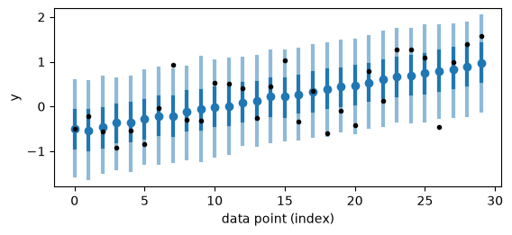
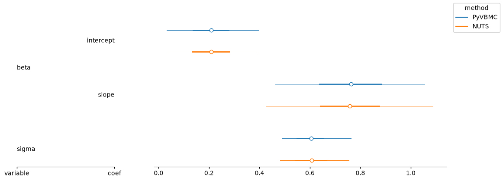

PyVBMC Example 8: Fitting a PyMC model#
In this notebook, we fit a PyMC model with PyVBMC, convert the variational posterior back to PyMC’s named variables, and use PyMC and ArviZ for posterior analysis and prediction. We also run a short NUTS fit as a reference for the posterior marginals.
This notebook is Part 8 of a series of notebooks presenting example uses of VBMC with the PyVBMC package. The code used in this example is available as a script here. The adapter requires Python 3.12 or newer and the optional pymc dependency group, installed with pip install --upgrade "pyvbmc[pymc]". The example uses fixed seeds so that its simulated data, PyVBMC run, exported samples, posterior predictive draws, and NUTS comparison are reproducible.
import sys
if "google.colab" in sys.modules: # Colab lacks PyVBMC: install it
%pip install --upgrade "pyvbmc[pymc]"
import arviz as az
import numpy as np
import pymc as pm
from pyvbmc import PyMCTarget, VBMC
SEED = 7
1. A regression model in PyMC#
We simulate a small linear regression with an intercept, a slope, and an unknown observation scale. Named coordinates keep the two entries of beta identifiable throughout the PyMC workflow. The positive sigma parameter uses PyMC’s default logarithmic value transform, and mu is a deterministic vector used by the likelihood.
rng = np.random.default_rng(SEED)
n_observations = 30
predictor = np.linspace(-1.0, 1.0, n_observations)
design = np.column_stack([np.ones(n_observations), predictor])
beta_true = np.array([0.5, 1.0])
sigma_true = 0.7
observed = design @ beta_true + rng.normal(
0.0, sigma_true, size=n_observations
)
coords = {
"coef": ["intercept", "slope"],
"observation": np.arange(n_observations),
}
with pm.Model(coords=coords) as model:
beta = pm.Normal("beta", mu=0.0, sigma=5.0, dims="coef")
sigma = pm.HalfNormal("sigma", sigma=2.0)
mu = pm.Deterministic("mu", design @ beta, dims="observation")
pm.Normal(
"y",
mu=mu,
sigma=sigma,
observed=observed,
dims="observation",
)
2. From the model to a PyVBMC target#
PyMCTarget snapshots the model data, checks that its free variables have supported continuous geometry, and prepares a finite starting point and plausible box. Its setup evaluates the same joint density that PyVBMC will see. Those finite evaluations are retained for reuse, while the setup work is recorded as a function-equivalent cost.
The printed table describes both coordinate systems. The two unbounded beta coordinates stay in model space. The one-sided positive sigma keeps PyMC’s sigma_log__ transform, so PyVBMC works on an unbounded coordinate and its log joint includes the transform Jacobian. The default plausible box comes from local curvature, with prior-draw fallbacks when curvature is not usable.
target = PyMCTarget(model, seed=SEED)
print(target)
variable | shape | VBMC coordinates | kept transform | hard bounds | plausible bounds | start
beta | (2,) | beta[intercept], beta[slope] | - | [[-inf -inf], [inf inf]] | [[-0.09952025 0.24172931], [0.52304277 1.28427527]] | [0.21176126 0.76300229]
sigma | () | sigma_log__ | LogTransform | [[-inf], [inf]] | [[-0.95859605], [-0.1711322]] | [-0.56486412]
3. Run PyVBMC#
Passing the target directly resolves its starting point, hard and plausible bounds, setup observations, and setup cost. max_fun_evals is the total function-equivalent allowance: the target’s setup cost is charged once, and the remainder is available for fresh evaluations during optimization. Reused setup observations do not increment the fresh-call counter, and PyVBMC still constructs its ordinary initial design.
total_budget = 150
vbmc = VBMC(
target,
options={"max_fun_evals": total_budget, "display": "off"},
seed=SEED,
)
vp, results = vbmc.optimize()
budget = results["evaluation_budget"]
print(f"Convergence status: {results['convergence_status']}")
print(
"Function-equivalent budget: "
f"{budget['used']} used of {budget['limit']} "
f"({budget['initialization']} setup + {budget['new_calls']} fresh)"
)
print(
"Reused setup observations: "
f"{results.get('precomputed_observations', 0)}"
)
Convergence status: probable
Function-equivalent budget: 76 used of 150 (12 setup + 64 fresh)
Reused setup observations: 9
4. Back to PyMC#
The variational posterior lives internally in a flat PyVBMC coordinate system. target.to_arviz draws from it and returns an ArviZ DataTree whose posterior variables have the original PyMC names, shapes, dimensions, and coordinates. The summary below asks only for marginal statistics: unlike MCMC draws, independent draws from a fitted variational distribution do not have chain convergence diagnostics such as \(\hat R\).
posterior_data = target.to_arviz(vp, n_samples=1000)
vbmc_summary = az.summary(
posterior_data,
var_names=["beta", "sigma"],
kind="stats",
round_to=3,
)
vbmc_summary
| mean | sd | eti89_lb | eti89_ub | |
|---|---|---|---|---|
| beta[intercept] | 0.210 | 0.112 | 0.036 | 0.389 |
| beta[slope] | 0.763 | 0.186 | 0.475 | 1.044 |
| sigma | 0.606 | 0.085 | 0.492 | 0.754 |
PyMC can compute deterministics from these named posterior variables. Here it adds the full regression mean mu to the same DataTree for every exported draw. extend_dataset=True preserves beta and sigma; keeping those free variables is essential because posterior predictive sampling conditions on them by name.
posterior_data = pm.compute_deterministics(
posterior_data,
model=target.model,
var_names=["mu"],
extend_dataset=True,
progressbar=False,
)
assert {"beta", "sigma", "mu"} <= set(posterior_data.posterior.data_vars)
posterior_data.posterior["mu"]
<xarray.DataArray 'mu' (chain: 1, draw: 1000, observation: 30)> Size: 240kB
array([[[-0.75299888, -0.68738921, -0.62177954, ..., 1.01846218,
1.08407185, 1.14968152],
[-0.4080201 , -0.36713328, -0.32624646, ..., 0.69592403,
0.73681085, 0.77769767],
[-0.90205802, -0.84201669, -0.78197537, ..., 0.71905771,
0.77909904, 0.83914036],
...,
[-0.22499476, -0.18577597, -0.14655719, ..., 0.83391246,
0.87313125, 0.91235003],
[-0.39590035, -0.35762397, -0.3193476 , ..., 0.63756181,
0.67583819, 0.71411456],
[-0.97339688, -0.896401 , -0.81940511, ..., 1.10549202,
1.18248791, 1.25948379]]], shape=(1, 1000, 30))
Coordinates:
* chain (chain) int64 8B 0
* draw (draw) int64 8kB 0 1 2 3 4 5 6 ... 993 994 995 996 997 998 999
* observation (observation) int64 240B 0 1 2 3 4 5 6 ... 23 24 25 26 27 28 29The original model retained by target.model is also the prediction model. We draw replicated observations and use ArviZ 1.x’s interval plot to compare their posterior predictive intervals with the observed data.
posterior_predictive = pm.sample_posterior_predictive(
posterior_data,
model=target.model,
var_names=["y"],
random_seed=SEED,
progressbar=False,
)
az.plot_ppc_interval(
posterior_predictive,
var_names=["y"],
point_estimate="mean",
ci_probs=(0.5, 0.9),
);
Sampling: [y]

5. Comparison with PyMC’s NUTS sampler#
For this small, smooth model, NUTS is a natural reference. We run two short seeded chains on one core, then compare the marginal intervals from NUTS with those from PyVBMC. This is a posterior comparison, rather than a comparison with the setup probe or with a fixed parameter truth: finite simulated data move the posterior away from the values used to generate them.
with model:
nuts_data = pm.sample(
draws=500,
tune=500,
chains=2,
cores=1,
target_accept=0.9,
random_seed=SEED,
progressbar=False,
)
az.summary(
nuts_data,
var_names=["beta", "sigma"],
kind="all",
round_to=3,
)
Initializing NUTS using jitter+adapt_diag...
Sequential sampling (2 chains in 1 job)
NUTS: [beta, sigma]
Sampling 2 chains for 500 tune and 500 draw iterations (1_000 + 1_000 draws total) took 1 seconds.
We recommend running at least 4 chains for robust computation of convergence diagnostics
| mean | sd | eti89_lb | eti89_ub | ess_bulk | ess_tail | r_hat | mcse_mean | mcse_sd | |
|---|---|---|---|---|---|---|---|---|---|
| beta[intercept] | 0.209 | 0.109 | 0.037 | 0.385 | 835.013 | 549.313 | 1.005 | 0.004 | 0.004 |
| beta[slope] | 0.759 | 0.196 | 0.450 | 1.075 | 722.737 | 590.703 | 1.000 | 0.007 | 0.007 |
| sigma | 0.606 | 0.086 | 0.484 | 0.746 | 775.501 | 574.046 | 1.002 | 0.003 | 0.004 |
# Use a common sample axis for the independent draws and NUTS chains.
forest_data = {
label: az.extract(data, var_names=["beta", "sigma"]).reset_index(
"sample", drop=True
)
for label, data in {"PyVBMC": posterior_data, "NUTS": nuts_data}.items()
}
forest = az.plot_forest(
forest_data,
var_names=["beta", "sigma"],
sample_dims="sample",
combined=True,
point_estimate="mean",
ci_probs=(0.5, 0.9),
)
forest.add_legend("model", title="method");

The paired intervals should substantially overlap for the intercept, slope, and observation scale. Small differences are expected: PyVBMC returns an optimized variational approximation from a limited evaluation budget, whereas NUTS estimates the posterior with correlated Markov-chain draws.
6. Conclusions#
Construct
PyMCTarget(model)once and pass it directly toVBMC. Setup observations are reused, and setup work is charged once within the total function-equivalent budget.The adapter supports continuous float64 free variables that are unbounded, or that carry PyMC’s log, log-odds or interval transform; a one-sided variable keeps its PyMC transform and its Jacobian. It rejects discrete variables, any other transform (an ordered, a simplex or a custom one), unbounded distributions it does not recognize, bounds that depend on other random variables, and a variable whose coordinates mix one-sided bounds with other bounds.
target.to_arvizrestores model variable names, shapes, dimensions, and coordinates. The resultingDataTreeworks with ArviZ summaries and plots and with PyMC deterministics and posterior predictive sampling.PyVBMC is most useful when each target evaluation is expensive, the evaluation budget is limited, or a model-evidence estimate is important. For a cheap differentiable PyMC model where many gradient evaluations are affordable, PyMC’s own NUTS sampler is usually the better default and provides standard MCMC diagnostics.
PyMCTarget freezes inference inputs when it is constructed. Use target.model for prediction, and construct a new target if the inference data or model structure changes.
Acknowledgments#
Work on the PyVBMC package is supported by the Research Council of Finland (grants 356498 and 358980 to Luigi Acerbi) and its Flagship programme: Finnish Center for Artificial Intelligence FCAI.